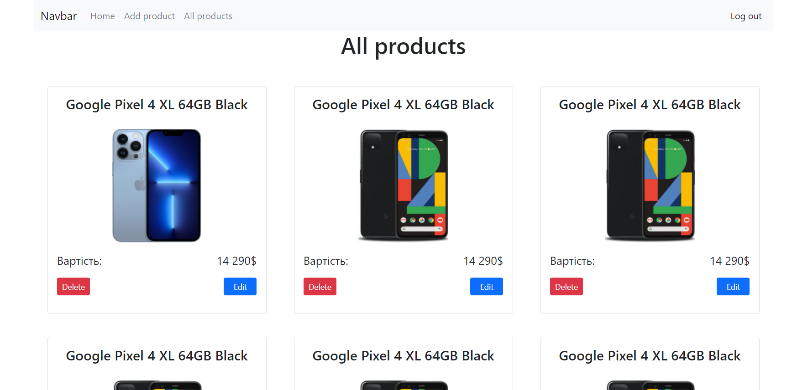

Курсова робота. Додвання компонент для адміністрування сайту №3. Відображення та редагування товарів.
1. Додайте кнопки видалення і редагування товару від імені адміна.

2. Додайте редагування за допомогою модального вікна.
3. Оновіть товар у firebase.
<script>
// Видалення документу у firebase по id
db.collection("products").doc(id).delete();
// Можна відслідковувати заверешення операції видалення
db.collection("products")
.doc(id)
.delete()
.then( function(){
// дії після видалення
console.log("Document deleted!")
});
// редагування документу у firebase по id
//update оновлює вказані поля документа не змінюючи інші які не вказані у user
db.collection("products")
.doc(id)
.update(product);
// Можна відслідковувати заверешення операції видалення
db.collection("products")
.doc(id)
.update()
.then( function() {
// дії після оновлення
console.log("Document is updated!")
});
//set повністю замінює документа
db.collection("products").doc(id).set(product);
// Можна відслідковувати заверешення операції заміни
db.collection("products")
.doc(id)
.set()
.then( function() {
// дії після заміни
console.log("Document is updated!")
});
</script>